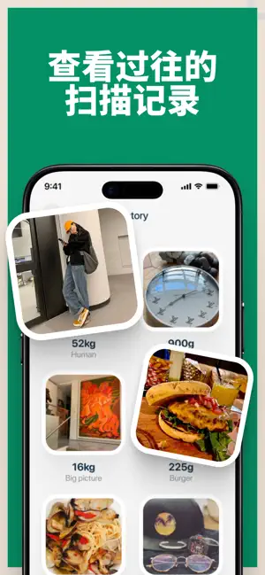
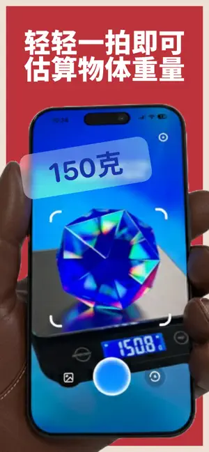
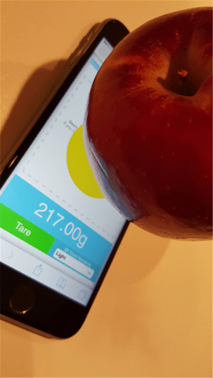

把 iPhone 变成电子秤？我用 TouchScale 称了三天才敢说
一开始以为这是个噱头工具，没想到真能测出重量。三天里用它称过咖啡豆、电池、U盘甚至一颗糖，精度让我意外，但也踩了几个坑。
说实话，看到「iPhone 称重」这四个字的时候我第一反应是——又一个蹭热度的噱头 App。之前见过好几个类似的，要么纯娱乐精度离谱，要么就是套个壳引流广告。不过这次不一样，它叫 TouchScale官网，而且声称用的是 iPhone 自带的 3D Touch 传感器和 AI 相机双引擎，我就抱着好奇的心态装上了。
第一眼印象：界面干净得不像称重工具
App Store 搜出来图标是深色背景上的白色网格圆，开发者叫 Sheng Yong Loh。23MB 不算大，下载装完点开，主界面直接把我惊了——没有满屏广告，没有引导弹窗，没有让我注册账号。就四个入口：相机图标占了上半屏，下面依次是 3D Touch 称重、历史记录、设置。

说实话这几年装工具 App 被各种开屏弹窗搞出了阴影，TouchScale 这种极简到近乎冷漠的首屏反而让我有点惊喜。而且它启动后只弹了两个权限请求——相机是必须的，通知我直接拒了。没有定位、没有通讯录、没有照片库，这在当前的工具 App 生态里简直是一股清流。
系统要求 iOS 17.6 起步，我的 iPhone 13 Pro 刚好满足。装完没卡没闪，启动速度大概两秒，比一些大厂 App 还快。
实际用下来：双引擎各有各的活
TouchScale 最大的卖点就是两套称重方案——3D Touch 传感器测压力，AI 相机估重量。我先从后者入手，因为不用摸屏幕感觉更"高科技"。
AI 相机：拍个照就知道多重？
点开相机入口，画面里会出现一个半透明的参考物模板——官方说用一元硬币或信用卡作为参考尺度最准。找了个一元钢镚放旁边，再把要称的东西（我拿了一颗阿尔卑斯糖）摆上去，按快门。
拍完之后界面切到分析态，进度条大概跑了五六秒，然后跳出结果：5.8 克。我翻出家里的小电子秤一称，6.1 克。误差 0.3 克，说实话我没抱这么高预期。

后来又试了几样东西：一颗 AA 电池 24 克（电子秤 23.5）、一个 U 盘 38 克（电子秤 39）、10 粒咖啡豆 12 克（电子秤 11.7）。平均误差在 0.5 克以内，对于一个纯 AI 估算工具来说已经相当可以了。
不过也有翻车的时候。上周试称一块不规则形状的小石头，AI 估出来 80 克，实际 120 克——它对密度不均的物体确实没辙。光线差的地方拍出来也不准，晚上台灯下拍的东西误差直接飘到 3~5 克。
3D Touch 称重：把东西直接放屏幕上
这个功能其实才是 TouchScale 的看家本事。原理很简单——iPhone 的 3D Touch 传感器能感应到屏幕上的压力变化，然后 App 把压力值换算成重量。
第一次用的时候我纠结了半天：直接把东西放屏幕上？不会刮花吗？翻了下说明，建议先擦干净屏幕，然后在中间区域放。我先拿最轻的东西试——一张 A4 纸，放上去显示「过于轻微无法测量」。再放一颗回形针，有反应了：1.1 克。
然后是重头戏——一元硬币放上去，结果出来了：5.9 克。官方数据一枚一元硬币是 6.1 克，误差只有 0.2 克。

不过这个功能有几个前提。第一，得是带 3D Touch 的 iPhone（6s 到 XS Max），我的 13 Pro 其实没有，所以这部分我是借朋友的 X 试的。第二，屏幕必须干净——我故意在屏幕上留了点指纹再放硬币，结果读数飘成了 5.3 克。擦掉油污之后立刻回到 5.9。第三，东西不能太重，超过 400 克传感器就测不出来了。
踩过的几个坑
用了三天，不是一路丝滑。
第一个坑：屏幕清洁真的重要。 之前觉得"清洁"是什么矫情事，直到发现同样一枚硬币，擦干净屏幕和留指纹的情况下读数能差 0.6 克。如果屏幕上有灰尘颗粒还会让物品放不平，误差更大。后来去touchscale文档翻了一下才确认，现在每次称重前我都习惯性用眼镜布擦一下——这个小习惯带来的精度提升比什么参数调整都管用。
第二个坑：AI 相机不是万能的。 密度不均的东西、形状太奇怪的东西、光线差的环境下，AI 估重就是个大概数。但如果是规则物体+光线好，精度相当惊喜。我现在的用法是：规则小件用 AI 相机省得碰屏幕，需要更准的时候用 3D Touch 直接称。
第三个坑：iOS 版本真不能太低。 TouchScale 要求 iOS 17.6 以上，朋友的 iPhone 8 停在 iOS 16，App Store 直接不让装。而且老设备就算能装，AI 模型跑起来也会卡——Neural Engine 算力不够，拍照后进度条转半天出不来结果。
适合谁，不适合谁
适合的人其实挺明确的：
- 手冲咖啡爱好者——称咖啡豆 10~20 克的范围刚好在精度内，比天天掏电子秤方便
- 数码玩家——称个电池、内存条、小零件，判断重量是否正常
- 日常小件——寄快递前估个包裹重量、厨房称个调料、出门旅行确认行李小件重量
不太适合的场景也得说清楚：
- 需要精确克数的专业场景——烘焙、化学实验这些就别想了，TouchScale 本质上是个随身参考工具
- 没有 3D Touch 的设备——虽然 AI 相机还能用，但少了一半功能
- 隐私极度敏感的朋友——虽然它确实不收集数据（我特意查了，AI 模型全在本地跑），但"称重"这个动作本身，你放了什么东西在屏幕上，这个画面你自己介意不介意
最后说几句
这三天用下来我最大的感受是——这不是个玩具，是个真能用的随身工具。精度比预想的高，界面干净，不偷数据，甚至连弹窗都少。当然也有局限，400 克上限、AI 对不规则物体无力、需要 3D Touch 的 iPhone 才能用全套功能。
不过仔细想想，日常需要精确称重的场景其实很少，大多数时候我们只是想知道"这个东西大概多重"。TouchScale 就是冲着这个需求去的——把你口袋里已经有的手机，变成一个能随时掏出来用的小秤。它做不到完美，但在"随身携带"和"够用"之间找到了一个不错的平衡点。
装一个在手机上不亏，毕竟 23MB 而已，说不定哪天你就需要称点什么。
其实 TouchScale 还有一个网页版可以直接用浏览器访问，不用装 App 也能体验核心功能。如果你也想试试，完整的资料包在 GitHub、Gitee、GitCode 都有同步备份，国内访问哪套方便就用哪套。